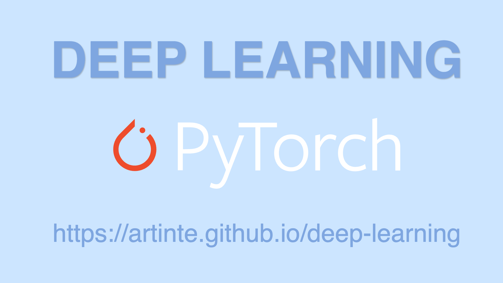
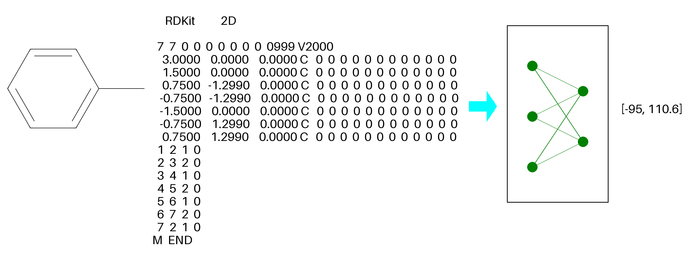
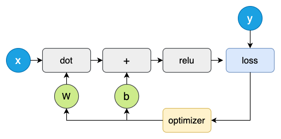
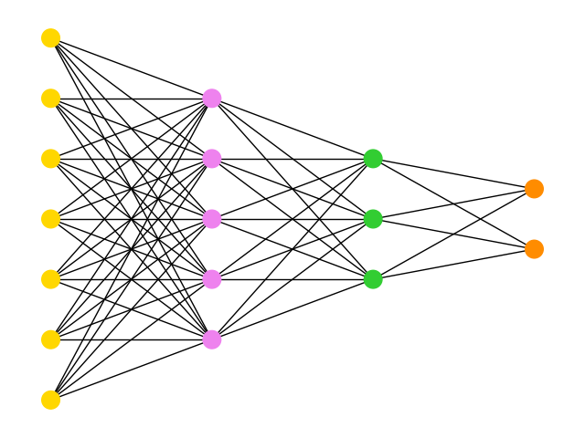
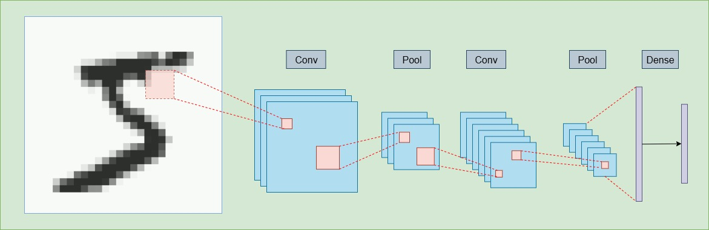
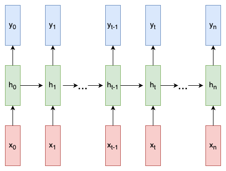
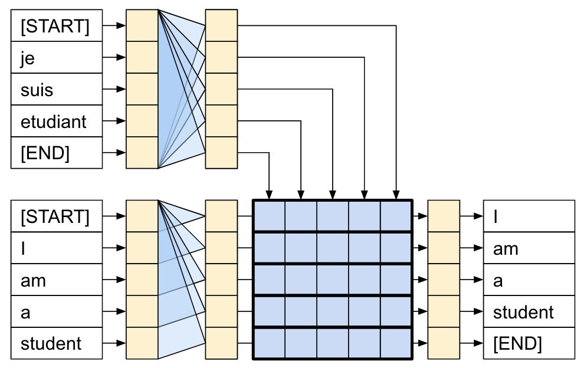

Deep Learning With PyTorch
This eBook not only focuses on the explanation of theoretical knowledge, but also pays more attention to engineering practice. By combining a large number of practical cases, especially how to train, optimize and deploy models, readers will be able to master how to use PyTorch to complete various deep learning tasks.

You need to have basic knowledge of Python to study this course. You can check your Python level by looking at the file download.py. If you don't know Python, it is recommended to read the textbook Introduction to Python Programming .

All source code implementation in Github artinte/deep-learning repository, include this website. You can follow my YouTube channel, support my channel with likes and follows — the more support, the faster the updates!
Preface
Learning machine learning is difficult, especially if you are entering from other majors. I saw the trend of artificial intelligence about six years ago (2019) and wanted to switch to the artificial intelligence industry, but I didn't have a good entry point.
Since 2024, I have been preparing to learn deep learning systematically. At first, I wrote in Google Docs, then wrote a Machine Learning Series, and now Deep Learning with PyTorch. Along the way, I think the most important thing is the goal and persistence, and you will gradually find the fun of learning.
Deep Learning with PyTorch combines a large number of excellent articles, including published papers, and processes them into an e-book. The blue link is the relevant reference. I would like to thank everyone for their selfless dedication here, and wish you peace and happiness!
Chapter 1 - 6: Fundamentals of Deep Learning
In these chapters, we'll establish a solid foundation in deep learning by exploring the fundamental concepts of various neural network architectures. We'll cover:
Dense Neural Networks (DNNs): The building blocks of deep learning.
Convolutional Neural Networks (CNNs): Essential for image processing and computer vision.
Transformer Models: Crucial for natural language processing (NLP) and sequence-to-sequence tasks.
Diffusion Models: A newer class of generative models used for tasks like image generation.
Chapter 7 - 9: Practical Applications of Deep Learning
This section focuses on applying the concepts from the first six chapters to real-world problems. We'll explore advanced techniques and their applications in various domains, including:
Text and Audio Processing
Image and Video Analysis
We'll also introduce advanced techniques like Variational Autoencoders (VAEs), which are powerful generative models.
Chapter 10: Reinforcement Learning
This chapter provides an introduction to Reinforcement Learning (RL), a critical component of modern AI. Our primary references will be the textbook "Reinforcement Learning" and official PyTorch tutorials.
We will specifically examine how RL is utilized in developing Large Language Models (LLMs), for example, through techniques like Reinforcement Learning from Human Feedback (RLHF) to enhance model performance.
Chapter 11 - 14: Advanced Topics and Optimization
These chapters are dedicated to practical, advanced topics essential for working with large-scale deep learning models. We will focus on:
Extending PyTorch: Customizing the framework for specific needs.
Model Deployment: Running models on different hardware devices.
Optimization Techniques: Improving model efficiency and performance.
Distributed Training: Methods for training models that are too large for a single device.
These topics are crucial because modern deep learning models are often too large to be handled with basic methods.
Chapter 15: Graph Neural Networks (GNNs)
The final chapter introduces Graph Neural Networks (GNNs). Due to their complex structure, we'll focus on the basics and explore how to implement them using PyG (PyTorch Geometric) libraries.
My goal is to find a high-paying, AI related job, maybe a youtuber. Although I don’t success yet :) , current time (2025.08) maybe I need more Gump’s spirits. Here is my profile, so that I can have more time to write relevant tutorials and better development space.
01 Tensor and Gradient Basics
It mainly introduces the core concepts in deep learning - tensors and gradients, and lays the foundation for subsequent learning.

1.1 Install PyTorch
pip3 install torch torchvision torchaudio
Select preferences and run the command to install PyTorch locally
1.2 Introduction to Tensors
A torch.Tensor is a multi-dimensional matrix containing elements of a single data type.
Introduction to PyTorch Tensors
Indexing on ndarrays — NumPy v2.2 Manual
Tensor Views - PyTorch 2.7 Documentation
1.3 Data Representation
Explains common data categories used in machine learning and data science, focusing on how they are represented as tensors (multi-dimensional arrays).
MNIST Handwritten Digit Database
1.4 Principles of Deep Learning
Introduce what deep learning is, its relationship with neural networks, and the various components of neural networks and how they work.
Artificial Intelligence, Machine Learning, and Deep Learning - Deep Learning with Python
1.5 Calculus
Calculus is designed for the typical two- or three-semester general calculus course, incorporating innovative features to enhance student learning. The book guides students through the core concepts of calculus and helps them understand how those concepts apply to their lives and the world around them. Due to the comprehensive nature of the material, we are offering the book in three volumes for flexibility and efficiency.
1.6 Gradient Descent
Chain rule interpretation, real-valued circuits, patterns in gradient flow.
1.7 Neural Network from Scratch
A simple explanation of how they work and how to implement one from scratch in Python.
Machine Learning for Beginners: An Introduction to Neural Networks
02 Fully Connected Network
Fully connected neural networks (FCNNs) are a type of artificial neural network where the architecture is such that all the nodes, or neurons, in one layer are connected to the neurons in the next layer.

2.1 Linear Algebra
This sixth edition of Professor Strang's most popular book, Introduction to Linear Algebra, introduces the ideas of independent columns and the rank and column space of a matrix early on for a more active start. Then the book moves directly to the classical topics of linear equations, fundamental subspaces, least squares, eigenvalues and singular values – in each case expressing the key idea as a matrix factorization. The final chapters of this edition treat optimization and learning from data: the most active application of linear algebra today.
Introduction to Linear Algebra, Sixth Edition
2.2 Points Classification
In this post we will implement a simple 3-layer neural network from scratch.
Implementing a Neural Network from Scratch in Python
2.3 PyTorch Basics
Most machine learning workflows involve working with data, creating models, optimizing model parameters, and saving the trained models. This tutorial introduces you to a complete ML workflow implemented in PyTorch, with links to learn more about each of these concepts.
2.4 Activation Function
The activation function of a node in an artificial neural network is a function that calculates the output of the node based on its individual inputs and their weights. Nontrivial problems can be solved using only a few nodes if the activation function is nonlinear.
A Beginner’s Guide to the Rectified Linear Unit (ReLU)
2.5 Loss Function
A loss function is a crucial component in machine learning that quantifies the difference between a model's predicted output and the actual target values.
2.6 Optimizer
An optimizer in machine learning, particularly in deep learning, is a function or algorithm that adjusts the model's parameters (like weights and biases) to minimize the loss function, thereby improving the model's performance.
03 Convolutional Network
A convolutional neural network (CNN) is a type of feedforward neural network that learns features via filter (or kernel) optimization.

3.1 CNN from Stratch
CNNs, Part 1: An Introduction to Convolutional Neural Networks
CNNs, Part 2: Training a Convolutional Neural Network
3.2 AlexNet
We trained a large, deep convolutional neural network to classify the 1.3 million high-resolution images in the LSVRC-2010 ImageNet training set into the 1000 different classes.
ImageNet Classification with Deep Convolutional Neural Networks
3.3 ResNet
Deeper neural networks are more difficult to train. We present a residual learning framework to ease the training of networks that are substantially deeper than those used previously. We explicitly reformulate the layers as learning residual functions with reference to the layer inputs, instead of learning unreferenced functions.
Deep Residual Learning for Image Recognition
3.4 U-Net
In this paper, we present a network and training strategy that relies on the strong use of data augmentation to use the available annotated samples more efficiently. The architecture consists of a contracting path to capture context and a symmetric expanding path that enables precise localization.
U-Net: Convolutional Networks for Biomedical Image Segmentation
3.5 DenseNet
In this paper, we embrace this observation and introduce the Dense Convolutional Network (DenseNet), which connects each layer to every other layer in a feed-forward fashion. Whereas traditional convolutional networks with L layers have L connections - one between each layer and its subsequent layer - our network has L(L+1)/2 direct connections.
04 Recurrent Network
Recurrent neural networks (RNNs) are a class of artificial neural networks designed for processing sequential data, such as text, speech, and time series, where the order of elements is important.

4.1 RNN from Stratch
A simple walkthrough of what RNNs are, how they work, and how to build one from scratch in Python.
An Introduction to Recurrent Neural Networks for Beginners
4.2 Word Embeddings
How to represent words as dense vectors (embeddings) so that similar words have similar representations — useful for NLP tasks.
4.3 Word2Vec
word2vec is not a singular algorithm, rather, it is a family of model architectures and optimizations that can be used to learn word embeddings from large datasets.
4.4 Text Generation With RNN
Recurrent Neural Networks Tutorial, Part 1 – Introduction to RNNs
Recurrent Neural Networks Tutorial, Part 2 – Implementing a RNN with Python, Numpy and Theano
Recurrent Neural Networks Tutorial, Part 3 – Backpropagation Through Time and Vanishing Gradients
Recurrent Neural Network Tutorial, Part 4 – Implementing a GRU and LSTM RNN with Python and Theano
Learning to store information over extended time intervals via recurrent backpropagation takes a very long time, mostly due to insufficient, decaying error back flow. We briefly review Hochreiter's 1991 analysis of this problem, then address it by introducing a novel, effcient gradient-based method called "Long Short-Term Memory" (LSTM).
In this paper we compare different types of recurrent units in recurrent neural networks (RNNs). Especially, we focus on more sophisticated units that implement a gating mechanism, such as a long short-term memory (LSTM) unit and a recently proposed gated recurrent unit (GRU).
Empirical Evaluation of Gated Recurrent Neural Networks on Sequence Modeling
4.5 Neural Machine Translation
In this paper, we conjecture that the use of a fixed-length vector is a bottleneck in improving the performance of this basic encoder-decoder architecture, and propose to extend this by allowing a model to automatically (soft-)search for parts of a source sentence that are relevant to predicting a target word, without having to form these parts as a hard segment explicitly.
Neural Machine Translation by Jointly Learning to Align and Translate
4.6 Attention-based NMT
This paper examines two simple and effective classes of attentional mechanism: a global approach which always attends to all source words and a local one that only looks at a subset of source words at a time.
Effective Approaches to Attention-based Neural Machine Translation
05 Transformer
The transformer is a deep learning architecture that was developed by researchers at Google and is based on the multi-head attention mechanism , which was proposed in the 2017 paper Attention Is All You Need .

This chapter is the most important one in this tutorial, We will start by learning what the attention mechanism is, then read paper "Attention Is All You Need", and provide some practical examples. Finally, BERT and ViT are variants of the Transformer.
Transformer is a relatively large deep learning architecture with extensive applications. There are numerous optimizations related to it, and it is difficult to explain thoroughly in a single article. Learning this architecture requires patience, and hands-on practice is extremely helpful for understanding the process of data computation.
5.1 Attention Mechanism
Mathematically speaking, an attention mechanism computes attention weights that reflect the relative importance of each part of an input sequence to the task at hand.
We will learn what the attention mechanism is, understand how to compute it using query, key, and value, and look into how PyTorch implements it—laying a solid foundation for the subsequent learning of Transformer.
What is an attention mechanism?
Attention Mechanisms and Transformers
5.2 Attention Is All You Need
We propose a new simple network architecture, the Transformer , based solely on attention mechanisms, dispensing with recurrence and convolutions entirely. Experiments on two machine translation tasks show these models to be superior in quality while being more parallelizable and requiring significantly less time to train.
Regardless of whether you fully understand it or not, go through the paper first to get a general impression. Later, when you work on specific example implementations and look back at this paper, you will gain more insights.
5.3 Transformer from Stratch
The Transformer from "Attention is All You Need" has been on a lot of people’s minds over the last year. Besides producing major improvements in translation quality, it provides a new architecture for many other NLP tasks. The paper itself is very clearly written, but the conventional wisdom has been that it is quite difficult to implement correctly.
This chapter will implement the Transformer architecture from scratch, module by module, to give you a clear look at the model's details. To avoid any data-related distractions, we'll only use numbers. Our goal is for the model to perform a copy task: if we input the sequence 0, 1, 2, ..., 9, we expect the model to output the exact same sequence. This may seem strange, as a simple function could do this with no effort. However, the remarkable part is that we can achieve this operation after passing the data through a massive and complex network. Isn't that incredible?
The main implementation is based on the article below. The article is very well-written, but it's quite long and may be difficult to understand. This guide will take a more accessible approach, with each module's output explained in detail to clarify its inner workings.
5.4 nn.Transformer
Attention Mechanisms and Transformers
torch.nn.Transformer - PyTorch
5.5 nanoGPT
The simplest, fastest repository for training/finetuning medium-sized GPTs.
5.6 BERT
We introduce a new language representation model called BERT, which stands for Bidirectional Encoder Representations from Transformers. Unlike recent language representation models, BERT is designed to pre-train deep bidirectional representations from unlabeled text by jointly conditioning on both left and right context in all layers.
BERT: Pre-training of Deep Bidirectional Transformers for Language Understanding
5.7 Vision Transformer
In vision, attention is either applied in conjunction with convolutional networks, or used to replace certain components of convolutional networks while keeping their overall structure in place. We show that this reliance on CNNs is not necessary and a pure transformer applied directly to sequences of image patches can perform very well on image classification tasks.
An Image is Worth 16x16 Words: Transformers for Image Recognition at Scale
06 Diffusion Model
Diffusion Model provides a comprehensive overview of the theoretical foundations and practical applications of diffusion models, breaking down the topic into seven key sub-sections.
6.1 Probability Theory
This sub-section emphasizes the diverse applications of probability theory across various fields like business, healthcare, sciences, sociology, political science, and computing. It links to resources on introductory statistics and explains fundamental concepts such as standard deviation and variance, which are crucial for understanding data distributions.
The text focuses on diverse applications from a variety of fields and societal contexts, including business, healthcare, sciences, sociology, political science, computing, and several others.
Introductory Statistics 2e - OpenStax
Standard Deviation and Variance
6.2 Gaussian Processes
This part delves into Gaussian Processes, a powerful tool in machine learning for modeling functions and making predictions. The linked resource, "Dive into Deep Learning," suggests a deeper exploration of this topic within the context of deep learning.
Gaussian Processes - Dive into Deep Learning
6.3 Mathematical Foundation
This section focuses on the mathematical underpinnings of diffusion generative models. It highlights the core theoretical concepts necessary to understand how these models function at a fundamental level.
Mathematical Foundation of Diffusion Generative Models
6.4 Diffusion from Scratch
This sub-section aims to provide a practical understanding of diffusion models by explaining Stable Diffusion from a foundational perspective, allowing users to grasp its mechanisms from the ground up.
Understanding Stable Diffusion from "Scratch"
6.5 Estimating Gradients
We introduce a new generative model where samples are produced via Langevin dynamics using gradients of the data distribution estimated with score matching.
Generative Modeling by Estimating Gradients of the Data Distribution
6.6 Diffusion Probability Model
We present high quality image synthesis results using diffusion probabilistic models, a class of latent variable models inspired by considerations from nonequilibrium thermodynamics.
Denoising Diffusion Probabilistic Models
6.7 Latent Diffusion
To enable DM training on limited computational resources while retaining their quality and flexibility, we apply them in the latent space of powerful pretrained autoencoders.
High-Resolution Image Synthesis with Latent Diffusion Models
07 Text
This document outlines four distinct tutorials related to artificial intelligence and natural language processing.

7.1 Translate text with Transformer
This tutorial demonstrates how to create and train a sequence-to-sequence Transformer model to translate Portuguese into English.
Neural machine translation with a Transformer and Keras
7.2 Easy OCR
This section introduces EasyOCR, a ready-to-use Optical Character Recognition (OCR) tool. It highlights EasyOCR's broad language support, covering over 80 languages, making it versatile for extracting text from images.
EasyOCR: Ready-to-use OCR with 80+ supported languages
7.3 Language Modeling
This part discusses advancements in large language models (LLMs), specifically mentioning Llama by Meta and DeepSeek-V3.
Llama: The most intelligent, scalable, and convenient generation of Llama is here: natively multimodal, mixture-of-experts models, advanced reasoning, and industry-leading context windows. Build your greatest ideas and seamlessly deploy in minutes with Llama API and Llama Stack.
We present DeepSeek-V3, a strong Mixture-of-Experts (MoE) language model with 671B total parameters with 37B activated for each token. To achieve efficient inference and cost-effective training, DeepSeek-V3 adopts Multi-head Latent Attention (MLA) and DeepSeekMoE architectures, which were thoroughly validated in DeepSeek-V2.
Industry Leading, Open-Source AI | Llama by Meta
7.4 Chatbots
A chatbot is a computer program that simulates human conversation with an end user. This final section defines a chatbot as a computer program designed to simulate human conversation with an end-user. It points to a PyTorch tutorial for learning how to develop chatbots.
08 Audio
Fundamentals of Music Processing (FMP)
8.1 Speech Feature Extraction
Sound is a mechanical wave that transmits energy through the vibration of a medium, such as air, water, or solids. Understanding its fundamental properties is crucial for converting it into a format that deep learning models can effectively process.
torchaudio.transforms.MelSpectrogram
8.2 Automatic Speech Recognition
whisper: About Robust Speech Recognition via Large-Scale Weak Supervision
Robust Speech Recognition via Large-Scale Weak Supervision
8.3 Text-to-Speech
An Open Source text-to-speech system built by inverting Whisper.
HiFi-GAN: Generative Adversarial Networks for Efficient and High Fidelity Speech Synthesis
8.4 Music Transcription
Automatic Music Transcription (AMT) is the task of extracting symbolic representations of music from raw audio.
Music Transcription with Transformers
8.5 Music Synthesis
09 Image and Video
9.1 Object Detection
TorchVision Object Detection Finetuning Tutorial
9.2 Transfer Learning
Transfer learning is a machine learning technique where a model, trained on one task, is reused as a starting point for a different but related task.
Transfer Learning for Computer Vision Tutorial
9.3 FGSM Attack
Adversarial Example Generation
9.4 Spatial Transformer
Spatial Transformer Networks Tutorial
9.5 DeepFaceLab
DeepFaceLab is the leading software for creating deepfakes.
DeepFaceLab: Integrated, flexible and extensible face-swapping framework
9.6 DeepFaceLive
9.7 Segment Anything
segment-anything: provides code for running inference with the SegmentAnything Model (SAM)
9.8 Intro to Autoencoders
An autoencoder is a special type of neural network that is trained to copy its input to its output.
10 Reinforcement Learning
Reinforcement Learning: An Introduction
Implementation of Reinforcement Learning Algorithms
David Silver's Reinforcement Learning
10.1 Introduction of RL
Chapter 1: Markov Decision Processes - Reinforcement Learning
10.2 Markov Decision Processes
Chapter 3: Markov Decision Processes - Reinforcement Learning
10.3 Dynamic Programming
Chapter 4: Dynamic Programming - Reinforcement Learning
10.4 DQN
This tutorial shows how to use PyTorch to train a Deep Q Learning (DQN) agent on the CartPole-v1 task from Gymnasium.
Reinforcement Learning (DQN) Tutorial
10.5 PPO
This tutorial demonstrates how to use PyTorch and torchrl to train a parametric policy network to solve the Inverted Pendulum task from the OpenAI-Gym/Farama-Gymnasium control library.
Reinforcement Learning (PPO) with TorchRL Tutorial
10.6 Function Approximation
11 Extending PyTorch
This chapter provides insights into extending PyTorch's capabilities. It covers custom operations, frontend APIs, and advanced topics like C++ extensions and dispatcher usage.
11.1 Custom Python Operators
11.2 Custom C++ and CUDA Operators
11.3 Double Backward
Double Backward with Custom Functions
11.4 Fusing Conv and Batch Norm
12 Deploying Models
12.1 ONNX
ONNX is an open format built to represent machine learning models. ONNX defines a common set of operators - the building blocks of machine learning and deep learning models - and a common file format to enable AI developers to use models with a variety of frameworks, tools, runtimes, and compilers.
12.2 ExecuTorch
ExecuTorch is PyTorch’s solution to training and inference on the Edge.
Getting Started with ExecuTorch
12.3 LiteRT
LiteRT (short for Lite Runtime), formerly known as TensorFlow Lite, is Google's high-performance runtime for on-device AI.
12.4 TensorFlow.js
TensorFlow.js is a library for machine learning in JavaScript
13 Model Optimization
This Chapter covers four key techniques used to improve the efficiency and performance of machine learning models.
13.1 LoRA
We propose Low-Rank Adaptation, or LoRA, which freezes the pre-trained model weights and injects trainable rank decomposition matrices into each layer of the Transformer architecture, greatly reducing the number of trainable parameters for downstream tasks.
LoRA: Low-Rank Adaptation of Large Language Models
13.2 Pruning
In this tutorial, we will learn how to use torch.nn.utils.prune to sparsify your neural networks, and how to extend it to implement your own custom pruning technique.
13.3 Quantization
We’ll lay a (quick) foundation of quantization in deep learning, and then take a look at how each technique looks like in practice.
Practical Quantization in PyTorch
13.4 Distillation
Knowledge distillation is a technique that enables knowledge transfer from large, computationally expensive models to smaller ones without losing validity. This allows for deployment on less powerful hardware, making evaluation faster and more efficient.
Knowledge Distillation Tutorial
14 Distributed Training
Distributed training is a model training paradigm that involves spreading training workload across multiple worker nodes, therefore significantly improving the speed of training and model accuracy. While distributed training can be used for any type of ML model training, it is most beneficial to use it for large models and compute demanding tasks as deep learning.
14.1 Distributed Data Parallel
DistributedDataParallel (DDP) is a powerful module in PyTorch that allows you to parallelize your model across multiple machines, making it perfect for large-scale deep learning applications.
Getting Started with Distributed Data Parallel
14.2 Fully Sharded Data Parallel
PyTorch FSDP2 provides a fully sharded data parallelism (FSDP) implementation targeting performant eager-mode while using per-parameter sharding for improved usability.
Getting Started with Fully Sharded Data Parallel (FSDP2)
14.3 Tenser Parallel
This tutorial demonstrates how to train a large Transformer-like model across hundreds to thousands of GPUs using Tensor Parallel and Fully Sharded Data Parallel.
Large Scale Transformer model training with Tensor Parallel (TP)
Tensor Parallelism - torch.distributed.tensor.parallel
14.4 Device Mesh
DeviceMesh is a higher level abstraction that manages ProcessGroup. It allows users to effortlessly create inter-node and intra-node process groups without worrying about how to set up ranks correctly for different sub process groups.
Getting Started with DeviceMesh
14.5 Remote Procedure Call
This tutorial uses two simple examples to demonstrate how to build distributed training with the torch.distributed.rpc package.
15 Graph Netural Network
PyG (PyTorch Geometric) is a library built upon PyTorch to easily write and train Graph Neural Networks (GNNs) for a wide range of applications related to structured data.
15.1 Graph Foundation
15.2 Core Ideas
A Gentle Introduction to Graph Neural Networks
15.3 Design of GNN
Design of Graph Neural Networks